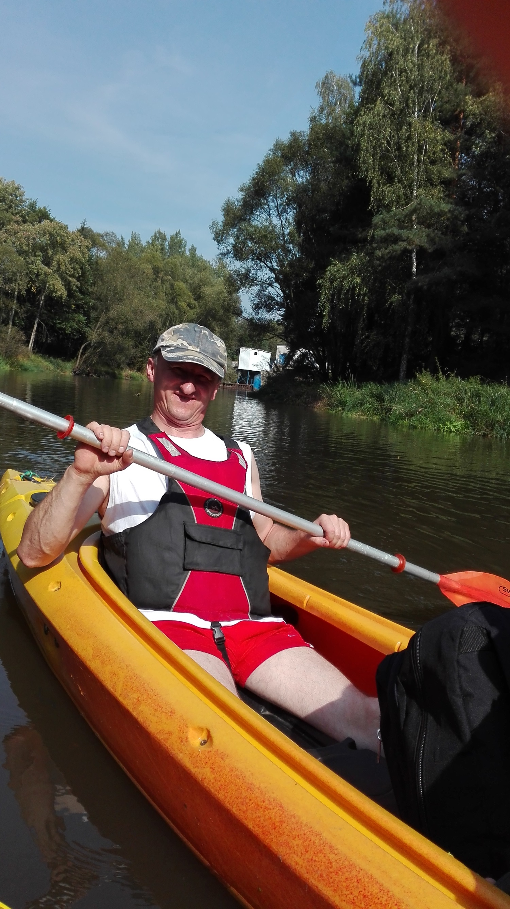

Oficjalnie biznesmen, człowiek sukcesu.
Prywatnie pasjonat, człowiek chcący po prostu więcej od życia.
mgr inż. elektronik zamieszkały w województwie opolskim, gmina Biała , powiat Prudnik, miejscowość Chrzelice nr 39.
Zawodowo zajmuje się elektroniką i instalacjami użytkowymi, głównie TV-SAT, internet przewodowy i bezprzewodowy, telekomunikacja przewodowa i stacyjna.
Lubię odpoczynek na łonie przyrody, hobby - wedkarstwo.
Ulubiony wykonawca muzyczny: Anna Wyszkoni.
Aktualnie uczestniczę w kursie Geekfactory, prowadzonego przez Daniela Opica
pragnę poszerzać swoje umiejętności i być może w przyszłości zostać programistą.
Pozytywne nastawienie, to moja dewiza!